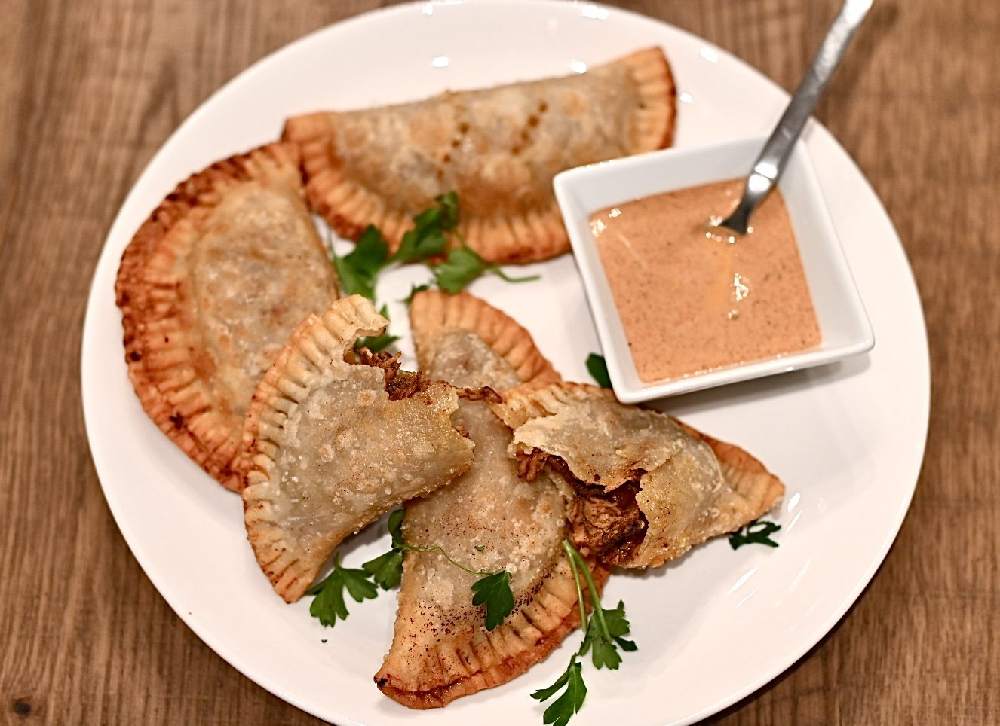
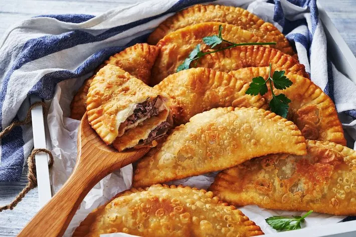

Pastelitos!

What is it?
Dominican pastelitos (really pronounced "patelitos"), are deep fried patties made of highly seasoned
ground beef, pork, chicken, shrimp, or spinach and cheese stuffed with chopped olives, and sometimes with
bits of egg and potatoes. Some weirdos add raisins but we try to forget about them lol. These are basically
the same thing that other latin countries call empanadas but with Dominican flavors.
Ingredients
- 1 lb ground beef 85% preferred
- 1 tbsp corn oil only if using 90% beef
- 2 tbsp lemon or lime juice both are just fine
- 1/4 cup chopped onions
- 1/2 cup chopped peppers any colors you prefer
- 2 tsp garlic powder
- 2 tbsp Adobo
- salt
- 2 tbsp manzanilla olives chopped
- 2 tbsp tomato sauce
- 10 empanada discs(store bought)
- corn oil enough for frying

Preparation
- In a non-stick skillet cook the ground beef while breaking it apart. If using 90% beef, add a tablespoon of oil.
- Add lemon or lime juice, onions, peppers, garlic powder, adobo. Continue to cook the beef while stirring, until you see very little liquid.
- Add olives and tomato sauce. Stir well and cook until you see that there is almost no liquid. You'll see a very small amount of oil. That's ok.
- Set the beef aside in a bowl to cool down.
- Defrost empanada discs per package instructions.
- You can either make a full disc or cut the disc in half to create 2 small pastelitos. These are great as appetizers.
- Have a small bowl filled with water ready to moisten the edges of the empanadas.
- Place an empanada disc on a cutting board, if using a full disc, place 2 tbs or so of the beef filling in the center.
- Moisten the edges of the empanada with water.
- Fold the empanada disc in half, press down and using a fork, seal all around the edges.
- If using half disc, follow the same steps but only use one tablespoon of beef filling.
- In a skillet, heat oil over medium heat.
- Test the heat of the oil by dipping the tip of an empanada into it. If you see that there is a bubbling reaction, it is ready to start frying. It's better to have the heat lower so the empanadas cook slower rather than flash frying and burning.
- Fry both sides until golden. 3 to 4 minutes.
Back to Homepage